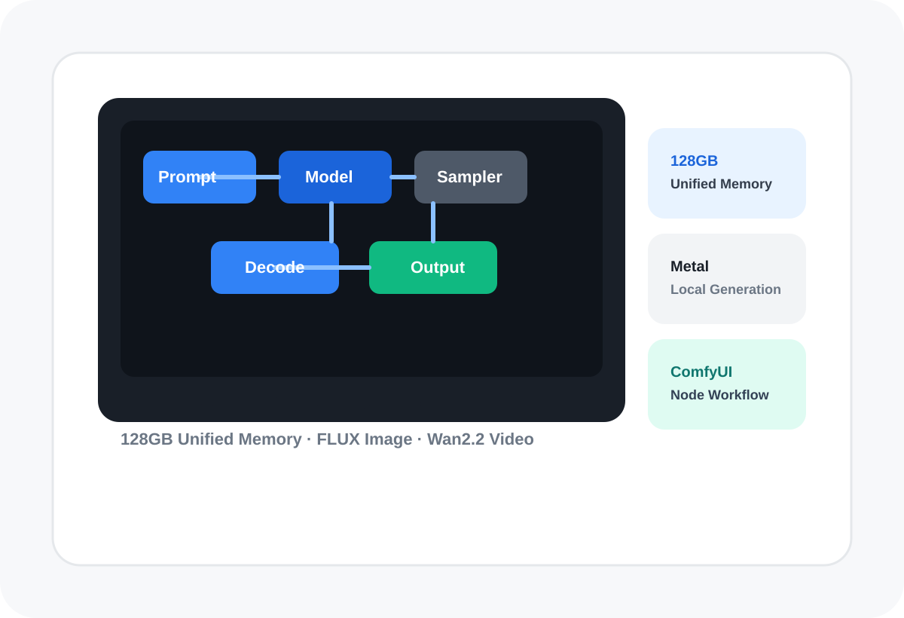
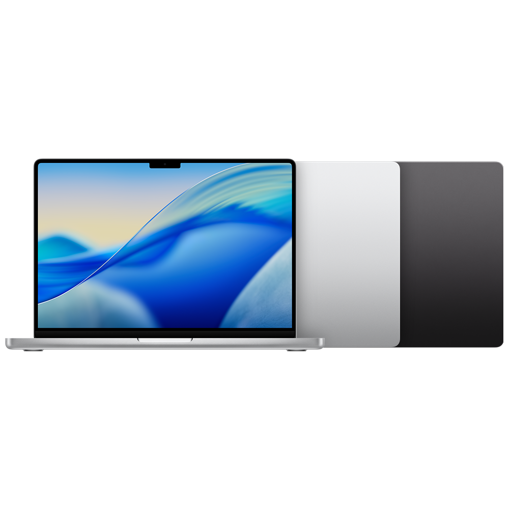

한 문장 결론
Desktop 앱 + MPS + FLUX.1 첫 이미지로 설치를 검증한 뒤, Wan2.2 5B·41프레임으로 영상 파이프라인을 확인하고 해상도와 프레임 수를 단계적으로 높이는 방식이 가장 안전합니다.
설치부터 MPS 확인, FLUX 이미지 생성, Wan2.2 텍스트·이미지 기반 영상 생성까지 한 흐름으로 정리했습니다. 결과물과 워크플로 파일을 함께 제공해 설명만 읽고 끝나지 않도록 구성했습니다.

M5 Max 128GB는 대형 이미지·영상 모델을 메모리에 올릴 수 있는 강한 기반입니다. 다만 128GB가 모두 GPU 전용 메모리는 아니며, CUDA 전용 노드와 일부 연산은 Mac에서 다르게 작동할 수 있습니다.
Desktop 앱 + MPS + FLUX.1 첫 이미지로 설치를 검증한 뒤, Wan2.2 5B·41프레임으로 영상 파이프라인을 확인하고 해상도와 프레임 수를 단계적으로 높이는 방식이 가장 안전합니다.
128GB 통합 메모리는 모델·텍스트 인코더·VAE를 함께 다룰 여유를 줍니다. Apple 사양상 이 구성은 40코어 GPU와 614GB/s 대역폭 조합입니다.[1]
비전공자는 Comfy Desktop을 권장합니다. macOS 13+, Apple Silicon, 설치당 약 4.85GB가 공식 최소 출발점입니다.[3]
PyTorch는 Metal의 MPS로 GPU를 사용하지만 MPS 백엔드는 계속 개선되는 영역입니다. CUDA 전용 최적화와 동일한 결과·속도를 전제로 하면 안 됩니다.[5]
모델이 메모리에 들어가는 것과 빠르게 생성되는 것은 다른 문제입니다. 이 장비는 용량 측면에서 강하지만, 실제 처리 시간은 각 노드의 Metal 지원과 모델 구조에 달려 있습니다.

1024×1024, 배치 1부터 시작하기에 충분한 메모리 여유가 있습니다. 32GB 초과 RAM에서는 FLUX의 FP16 T5 텍스트 인코더를 권장한다는 공식 예제 설명과도 부합합니다.[7]
공식 문서는 5B 하이브리드 모델이 네이티브 오프로딩으로 8GB VRAM에도 맞는다고 안내합니다. 128GB 구성은 용량보다 생성 시간·노드 호환성을 먼저 확인해야 합니다.[8]
메모리에는 들어갈 가능성이 높아도, 긴 영상은 픽셀 수×프레임 수×샘플링 단계만큼 계산량이 커집니다. 5B 파이프라인 검증 전 14B를 첫 모델로 선택하지 않는 편이 안전합니다.
CUDA 전용 라이브러리, Triton, xFormers 특정 기능을 요구하는 노드는 Mac에서 설치 실패 또는 CPU 폴백이 날 수 있습니다. 필요한 노드만 신뢰할 수 있는 출처에서 설치합니다.[10]
Desktop은 Python과 의존성을 자동 관리해 첫 성공률이 높습니다. 수동 설치는 최신 커밋, 독립 환경, 세밀한 버전 통제가 필요한 사용자에게 적합합니다.
Comfy Desktop 기준 macOS 13 이상, Apple Silicon이 필요합니다. 최신 MPS 수동 환경은 macOS 14 이상을 권장합니다.[3]
ComfyUI 공식 macOS 다운로드 페이지에서 최신 DMG를 받습니다. 비공식 번들보다 공식 경로를 우선합니다.
DMG를 열고 Comfy Desktop을 Applications 폴더로 드래그한 뒤 Launchpad 또는 Spotlight에서 실행합니다.[3]
첫 실행 경고가 나오면 시스템 설정 → 개인정보 보호 및 보안 → 그래도 열기를 선택합니다.
실행 장치 선택 화면이 나타나면 MPS를 선택합니다. CPU Mode는 문제 진단 외에는 선택하지 않습니다.
모델·출력·워크플로를 위한 빈 폴더를 지정합니다. 권장 예: ~/ComfyUI-Shared.
수동 설치는 가상환경 → 저장소 복제 → PyTorch/MPS → ComfyUI 의존성 → 실행 순서로 진행합니다. 공식 문서는 시스템 Python 오염을 피하기 위해 독립 환경을 권장하며, Python 3.13을 우선 권장하고 일부 커스텀 노드 의존성 문제가 있으면 3.12를 대안으로 안내합니다.[4][13]
# 0) Apple 개발 도구 설치
xcode-select --install
# 1) 독립 환경 생성 — Python 3.13 우선, 문제 시 3.12
conda create -n comfyenv python=3.13 -y
conda activate comfyenv
# 2) ComfyUI 복제
mkdir -p ~/AI && cd ~/AI
git clone https://github.com/Comfy-Org/ComfyUI.git
cd ComfyUI
# 3) Apple Silicon용 PyTorch nightly
conda install pytorch-nightly::pytorch torchvision torchaudio -c pytorch-nightly
# 4) ComfyUI 의존성 및 실행
python -m pip install --upgrade pip
python -m pip install -r requirements.txt
python main.py운영 권고: Desktop과 수동 설치를 동시에 운영한다면 모델은 공유 폴더 하나에 두고 extra_model_paths.yaml로 연결해 중복 저장을 막습니다.[4]
공식 다운로드 열기ComfyUI는 모델 유형별 폴더를 검색합니다. 파일 이름이 맞아도 폴더가 틀리면 노드 목록에 나타나지 않습니다. 파일을 넣은 뒤에는 앱 재시작 또는 R 키로 모델 목록을 새로고침합니다.[6]
Desktop의 실제 루트는 설치 시 선택한 공유 폴더, 수동 설치는 ComfyUI/models입니다.
ComfyUI/
├─ models/
│ ├─ diffusion_models/ # FLUX, Wan 본체
│ ├─ text_encoders/ # T5, CLIP, UMT5
│ ├─ vae/ # 잠재공간 → 이미지
│ ├─ checkpoints/ # 단일 파일 모델
│ └─ loras/ # 스타일·캐릭터 보조
├─ input/ # I2V 입력 이미지
├─ output/ # 생성 결과
└─ user/ # 워크플로·설정“실행된다”보다 “GPU로 실행된다”를 확인해야 합니다. 아래 스크립트는 PyTorch가 MPS를 빌드했고 현재 장치에서 사용할 수 있는지 검사합니다.[5]
cd ~/AI/ComfyUI
python /path/to/verify_mps.py
# 기대 결과
MPS built: True
MPS available: True
MPS tensor test: tensor([1.], device='mps:0')설치 인스턴스 하나의 출발점. 모델·출력은 별도입니다.[3]
FLUX + Wan 5B + 캐시 + 출력 보관을 위한 운영 추정치입니다.
동시 생성보다 단일 작업으로 오류와 메모리 압력을 먼저 확인합니다.
ComfyUI 공식 예제 이미지는 워크플로 메타데이터를 포함합니다. 아래 PNG를 다운로드해 ComfyUI 캔버스에 드래그하면 모델 파일만 갖춰진 상태에서 동일한 구조를 불러올 수 있습니다.[12]
1024×1024 PNG 안에 실제 워크플로와 API 프롬프트가 포함되어 있습니다. 보고서 패키지에는 추출한 JSON도 함께 제공합니다. 예제 저장소 라이선스는 워크플로 재사용을 허용하지만, 생성 이미지의 별도 재배포 권리와 모델 이용 조건은 프로젝트 목적에 맞게 다시 확인해야 합니다.[15]
cute anime girl with massive fluffy fennec ears and a big fluffy tail, blonde messy long hair, blue eyes, wearing a maid outfit with a long black gold leaf pattern dress and a white apron, holding a fancy black forest cake with candles, in the kitchen of an old dark Victorian mansion lit by candlelight, bright window to a foggy forest
핵심은 “주체 → 외형 → 의상 → 행동 → 배경 → 조명” 순서입니다. 긴 수식어보다 충돌 없는 장면 구조가 재현성에 유리합니다.
실행 순서: PNG 드래그 → 빨간 노드의 모델 파일명 확인 → 각 모델 다운로드·배치 → R 키로 새로고침 → 프롬프트 수정 → Cmd + Enter. FLUX.1 Dev 가중치는 모델 카드의 이용 조건 동의가 필요합니다.[14]
공식 템플릿은 Workflow → Browse Templates → Video → “Wan2.2 5B video generation”에서 불러올 수 있습니다. 5B 모델은 텍스트·이미지 기반 영상을 한 워크플로에서 다룹니다.[8]
패키지 내 로컬 MP4: 아래 파일은 브라우저 재생과 전달 포맷을 확인하기 위한 부속 예시입니다. 첫 영상은 첨부 FLUX 이미지에 카메라 모션만 적용했으며, 둘째는 공식 T2V 프롬프트의 절차형 스토리보드입니다. Wan2.2 모델 출력으로 오인하지 마십시오.
Video 템플릿에서 Wan2.2 5B 워크플로를 엽니다.
5B 본체, UMT5 텍스트 인코더, Wan VAE를 지정 폴더에 넣습니다.
T2V는 시작 이미지 없음. I2V는 Load Image를 start_image에 연결합니다.
1280×704, 41프레임, 30 steps, batch 1로 첫 결과를 확인합니다.
성공 후 프레임·해상도·모델 규모를 한 번에 하나씩 높입니다.
ComfyUI/models/
├─ diffusion_models/
│ └─ wan2.2_ti2v_5B_fp16.safetensors
├─ text_encoders/
│ └─ umt5_xxl_fp8_e4m3fn_scaled.safetensors
└─ vae/
└─ wan2.2_vae.safetensors공식 5B 예제 JSON은 1280×704, 41프레임, 30단계, CFG 5, 24fps를 사용합니다. 워크플로 메모에는 121프레임이 권장 길이로 적혀 있지만 첫 결과 대기 시간을 줄이기 위해 41프레임을 사용합니다.
장면 전체를 지시하는 대신 카메라·주체·동작·환경 변화 순서로 적습니다.
cinematic drone shot, a red fox walks cautiously across a black volcanic slope, ash clouds rise from an erupting crater in the background, subtle camera push-in, realistic scale, natural motion, no text, no watermark
카메라: drone shot / 주체: red fox / 동작: walks cautiously / 환경: erupting crater / 품질 통제: no text
입력 이미지의 정체성을 지키고 “무엇이 움직이는지”만 구체화합니다.
gentle dolly-in, candle flames flicker, her hair and fluffy tail move softly in the indoor breeze, she steadies the cake with both hands, preserve face, costume and background composition, natural motion, no scene cut
원본 유지: preserve face / 움직임: hair, tail, candle / 카메라: gentle dolly-in / 금지: no scene cut
MP4 변환: 공식 예제의 WebM 또는 Animated WebP를 범용 H.264 MP4로 바꾸려면 FFmpeg를 사용합니다.
brew install ffmpeg
# WebM → 범용 MP4
ffmpeg -i ComfyUI_00001_.webm \
-c:v libx264 -pix_fmt yuv420p -movflags +faststart output.mp4
# Animated WebP → MP4
ffmpeg -i ComfyUI_00001_.webp \
-c:v libx264 -pix_fmt yuv420p -movflags +faststart output.mp4M5 Max의 공개 사양만으로 특정 워크플로 시간을 단정할 수 없습니다. 아래 표에 동일 Seed·동일 모델로 세 번 측정해 첫 로드와 재실행을 분리하면 실제 운영 판단이 가능합니다.
| 테스트 | 모델·설정 | 첫 실행 | 재실행 | 메모리 압력 | 판정 |
|---|---|---|---|---|---|
| 이미지 기준선 | FLUX.1 Dev · 1024² · 20 steps | ||||
| 영상 기준선 | Wan2.2 5B · 1280×704 · 41f | ||||
| 품질 확대 | 동일 Seed · 프레임 또는 해상도만 변경 |
입력값은 현재 브라우저 세션에만 있으며 자동 저장되지 않습니다. PDF로 저장하면 기록을 남길 수 있습니다.
전원 어댑터를 연결하고 통풍이 되는 단단한 바닥에서 실행합니다. 긴 영상 큐는 발열로 처리 속도가 달라질 수 있습니다.
Activity Monitor에서 노랑·빨강이 지속되면 프레임·해상도·동시 큐를 줄입니다. 숫자보다 압력 상태가 중요합니다.
Seed를 고정한 뒤 Steps, Guidance, 해상도, 프레임 중 하나만 바꿉니다. 그래야 품질 차이의 원인을 알 수 있습니다.
Desktop·수동 설치가 공존하면 extra_model_paths로 한 라이브러리를 공유해 수십 GB 중복을 피합니다.
초안·승인·최종 폴더를 구분하고 Seed·프롬프트·워크플로 JSON을 결과물과 함께 보관합니다.
납품 중에는 코어·노드·PyTorch를 동시에 업데이트하지 않습니다. 별도 인스턴스에서 검증 후 운영 환경에 반영합니다.
처음부터 커스텀 노드를 많이 설치하면 원인 분리가 어려워집니다. 코어 워크플로가 정상 동작한 뒤 필요한 기능만 추가합니다.
현재 가상환경의 PyTorch가 MPS 지원 빌드인지, macOS가 최신인지, Apple Silicon 환경인지 확인합니다. Desktop이라면 앱 내부 Terminal에서 검사해야 하며 시스템 Terminal의 다른 Python 결과와 혼동하지 마십시오.
동시 큐를 1개로 줄이고, 영상 프레임 수 또는 해상도를 낮춥니다. 브라우저 탭·영상 편집기·다른 AI 앱을 닫고 재시도합니다. 비공식 환경 변수로 메모리 안전 한계를 해제하는 방법은 시스템 불안정 위험이 있어 기본 해결책으로 권장하지 않습니다.
최근 설치한 노드 폴더를 custom_nodes 밖으로 이동해 부팅을 확인합니다. 별도 인스턴스에서 노드 의존성을 검증하고, 운영 인스턴스의 Python 환경에 시스템 pip로 설치하지 않습니다.
코어는 로컬 워크플로로 사용할 수 있지만, 최초 앱·모델·노드 다운로드와 업데이트에는 인터넷이 필요합니다. Partner/API 노드는 외부 서비스로 데이터를 보낼 수 있으므로 민감 자료는 로컬 코어 노드만 사용하는 별도 인스턴스에서 처리합니다.[11]
성공 기준은 “앱이 열림”이 아니라 이미지·영상이 저장되고 같은 JSON으로 다시 생성되는 것입니다.
공식 DMG 설치, MPS 장치 선택, 공유 폴더 지정.
기본 워크플로 실행 전 콘솔에서 장치를 확인.
첨부 공식 예제 PNG로 노드 그래프를 불러오기.
빨간 모델 노드의 파일을 역할별 폴더에 배치.
Seed·시간·메모리 압력을 기록하고 JSON 저장.
FLUX 1024², 20 steps, batch 1을 3회 측정.
주체·행동·배경·조명 순서의 템플릿 확정.
T2V 41프레임으로 저장까지 통과.
첫 이미지에 한 가지 카메라 모션 적용.
121프레임 비교, MP4 변환, 모델 라이선스와 폴더 백업 점검.
{kind=link}